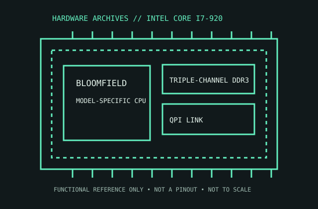

[ ENTHUSIAST DESKTOP PROCESSORS // IDENTIFIED PROCESSOR ]
Intel Core i7-920
The original Nehalem Bloomfield Core i7-920 moved memory control onto the processor and introduced Intel’s triple-channel desktop memory platform.

MODEL IDENTIFICATION: Intel Core i7-920. Compare the printed part number, speed grade, package, cache configuration, and stepping with the cited documentation; do not transfer one variant’s limits to another.
Recorded specifications
| Cataloged part | Intel Core i7-920 |
|---|---|
| Era / family | Intel Core i7-900 series / Bloomfield, launched 2008; i7-920 SKU. |
| Key specifications | 4 cores / 8 threads; 2.66 GHz base, up to 2.93 GHz Turbo; 8 MB shared L3; 130 W TDP; LGA1366; triple-channel DDR3; 4.8 GT/s QPI. |
| Interface / fit | Requires X58/LGA1366 board with a BIOS supporting the exact stepping, appropriate cooler, and triple-channel DDR3 configuration. Not compatible with later LGA115x Core i7 sockets. |
| Variant distinction | The i7-920 is a 45 nm Bloomfield CPU without an integrated GPU. The i7-920 D0 stepping differs from early C0; identify sSpec for voltage/firmware history. |
Compatibility and variants
- Requires X58/LGA1366 board with a BIOS supporting the exact stepping, appropriate cooler, and triple-channel DDR3 configuration. Not compatible with later LGA115x Core i7 sockets.
- The i7-920 is a 45 nm Bloomfield CPU without an integrated GPU. The i7-920 D0 stepping differs from early C0; identify sSpec for voltage/firmware history.
- Confirm the system manufacturer’s exact processor support list, firmware minimum, board revision, power/thermal envelope, and memory requirements before installation.
Service and archival notes
Record board revision and BIOS, memory channel population, QPI setting, and cooler. Inspect LGA1366 socket contacts and avoid assuming the board supports later Gulftown CPUs.
Preserve provenance and a record of the exact marking, condition, tested board/platform, firmware, cooling, memory configuration, and test conditions. Separate published specification limits from observations made on a particular surviving system.
Sources & further reading
- Intel Core i7-920 model specifications — Intel ARK search/referenceSpecific model or manufacturer-family reference; verify revision and configuration against the device marking and platform documentation.
- Intel Core i7-900 Desktop Processor Series Datasheet — Bloomfield platformSpecific model or manufacturer-family reference; verify revision and configuration against the device marking and platform documentation.
- Intel Core i7 launch history — Intel newsroom, 2008 Nehalem introductionSpecific model or manufacturer-family reference; verify revision and configuration against the device marking and platform documentation.
Third-party reference pages and document archives are finding aids. The matching manufacturer datasheet, product specification, and board support documentation take precedence for the exact revision and host.